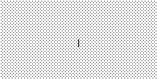

Tkinter 8.5 reference: a GUI for Python |
Tkinter 8.5 reference: a GUI for Python |
This may seem like an incredibly picky style point, but if you draw a graphic that has two objects with stippled patterns, a real professional will make sure that the patterns align along their boundary.
Here is an example. The left-hand screen shot shows two
adjacent 100×100 squares stippled with the
“gray12” pattern, but
the right-hand square is offset vertically by one
pixel. The short black line in the center of the figure
is drawn along the boundary of the two figures.

|  |
The second screen shot is the same, except that the two 100×100 squares have their stipple patterns lined up.
In practice, this arises in two situations. The
alignment of large stippled areas is controlled
by an option named offset. For figures
with stippled outlines, the outlineoffset
option controls their alignment. Both options have
values of one of these forms:
': Offset the stipple
patterns by this x,y'xy
'#: For objects on a canvas,
use offset x,y'xy
tk.NE,
tk.SE,
tk.SW,
tk.NW:
Align a corner of the stipple pattern with the
corresponding corner of the containing object. For
example, tk.NE means that the top
left corner of the stipple pattern coincides with the
top left corner of the area to be stippled.
tk.N,
tk.E,
tk.S,
tk.W:
Align the stipple pattern with the center of one side
of the containing object. For example, tk.E means the center of the stipple pattern
will coincide with the center of the right side of
the area to be stippled.
tk.CENTER: Align the center of the
stipple pattern with the center of the containing
object.